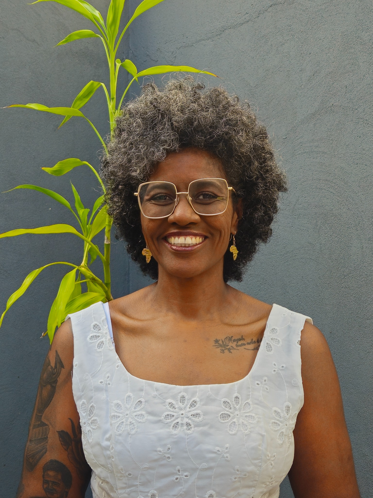

2024
Capa em atualização
Luiza Mahin
In: Dicionário biográfico: histórias entrelaçadas de mulheres afrodiaspóricas. Rio de Janeiro: Malê Edições, v. 1, p. 298–303.

Docente do Curso de História
Ver página completa do docente →Produção docente
Livros, coletâneas e outras produções que ajudam a visualizar sua trajetória intelectual no Curso de História da UFRB.
Bibliografia visual
Obras de autoria, coautoria, organização ou coorganização já reunidas no Memorial.
Percursos de pesquisa
Uma curadoria de capítulos que evidencia alguns dos principais eixos da trajetória intelectual de Aline: mulheres negras e memória, ensino de História da África e da cultura afro-brasileira, religiosidades e pós-abolição.
In: Dicionário biográfico: histórias entrelaçadas de mulheres afrodiaspóricas. Rio de Janeiro: Malê Edições, v. 1, p. 298–303.
In: Perspectivas sobre a Universidade Pública: experiências, diálogos e produção do conhecimento. Ponta Grossa: Atena Editora, v. 1, p. 93–106.
In: Linguagens e Crítica Cultural. Catu: Bordô Grená, p. 68–83.
In: Dos fios às tramas: tecendo histórias, memórias, biografia e ficção. Salvador: Quarteto, p. 97–116.
Trajetória intelectual
Uma seleção de artigos que permite acompanhar diferentes frentes da produção de Aline, articulando emancipação e pós-abolição, gênero e sexualidade, educação, memória e história política africana.
Com Álvaro Pereira do Nascimento · Afro-Ásia, v. 1, p. 81–104, 2020.
Com T. L. M. Souza · Discentis: Revista Científica da Universidade do Estado da Bahia – Campus XVI – Irecê, v. 8, p. 27–36, 2020.
Revista do Coletivo Seconba, v. 3, p. 3–12, 2019.
Revista do Instituto Histórico e Geográfico de Sergipe, v. 2, 2019.
Sankofa, v. 9, p. 163–173, 2016.
Esta é uma seleção editorial do Memorial. A relação completa da produção permanece disponível no Currículo Lattes da docente.